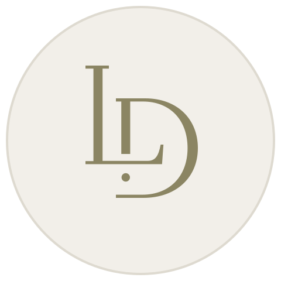
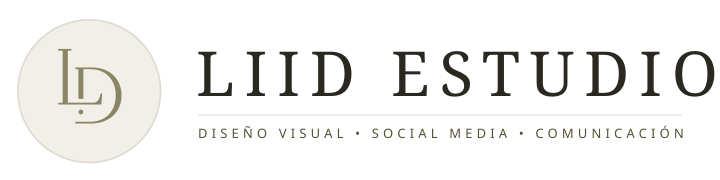

Marcas con esencia propia y estrategia consciente.
Estudio conceptual de identidad visual, dirección estratégica, paleta cromática web 60·30·10 (WCAG AA/AAA) y kit de activos digitales diseñado para LIID ESTUDIO (proyecto de portafolio no oficial).
Antes de construir tu marca, siéntela.
Frente a la saturación del marketing agresivo e impersonal, este estudio conceptual explora cómo un atelier boutique acompaña a fundadores y proyectos a traducir su propósito en un universo visual coherente.
Coherencia que impulsa
Transformar ideas y negocios con propósito en marcas memorables — pasando de «tener solo un logo» a poseer una identidad estratégica completa que conecte, diferencie y convierta sin perder autenticidad.
Referente Boutique en España
Posicionar el concepto como un estudio boutique de referencia en Marketing Consciente y dirección creativa sensorial para marcas de estilo de vida, bienestar, diseño y liderazgo personal.
Diseño • Social • Comunicación
1. Diseño Visual & Branding: Identidad con alma.
2. Social Media: Estrategia coherente y curaduría estética.
3. Comunicación Consciente: Narrativa humana y dirección creativa.
El monograma bespoke LD.
Construcción tipográfica de alto contraste donde el asta vertical de la D se detiene sutilmente sobre el brazo de la L para dar paso al punto identitario (.), simbolizando pausa, intención y esencia.
Primary Avatar Emblem
Olive Essence (#8B8563) & Porcelain Linen. Uso principal en perfiles sociales, favicon y sellos digitales.

Stationery Wax Seal
Porcelain Linen (#F2EFE9) con monograma oliva. Ideal para packaging editorial, sobres y papelería táctil.

Editorial Wordmark Lockup
Cabecera conceptual para web, propuestas creativas y dosieres de dirección artística.
Luz mediterránea, oliva orgánico y arcilla cálida.
Haz clic en cualquier muestra para copiar su código HEX. Calibrada para garantizar contraste WCAG 2.1 AA/AAA tanto en modo diurno como nocturno.
Diálogo entre rigor editorial y gesto humano.
Pesos Regular (400), Medium (500) y SemiBold (600). Tracking +0.16em en mayúsculas (ESENCIA, LIID ESTUDIO) y -0.01em en titulares editoriales.
Reservada exclusivamente para 1 palabra clave emocional dentro de un titular serif (Social media, Diseño visual, marca) y la firma editorial del estudio.
Pesos Light (300), Regular (400) y Medium (500). Aporta lectura limpia, aire contemporáneo y micro-etiquetas en caja alta (0.26em).
De concepto editorial a atelier digital.
Aplicación práctica de la paleta 60·30·10, jerarquía tipográfica y canales de ejemplo (hello@example.com • +34 600 000 000).
¿Tienes una marca o solo un logo?
Acompañamos a proyectos y marcas personales a descubrir su esencia, diseñar su universo visual y comunicar con coherencia.